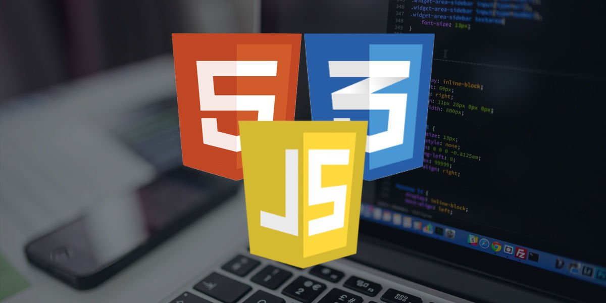

Front End Programlama nedir ? sorusunu şu şekilde cevaplayayım. Mesela diyelim ki bir web sitesini açtınız, karşınıza menüler, kampanyaların yer aldığı görsel geçişleri, renkler, fontlar, görsel yerleştirmeleri çıktı. Bu ana sayfa, bir front.end developer eseridir. Kısaca, bir web sitesinde kullanıcının görebildiği, etkileşime geçebildiği her şey, yazılımın front.end aşamasında ortaya çıkar.
Front-end yazılımcılar, UX dediğimiz kullanıcı deneyiminin de mimarlarıdır. Kullanıcının site içerisinde işini kolaylaştıran ve onların siteden memnun ayrılmasının sağlanmasında iş yükü onlardadır. Bu aşama teknik ve görsel tasarım becerilerinin aynı anda kullanımını gerektirir.
HTML, CSS, JavaScript gibi kodlama dilleriyle oluşturulan front-end kısmı, Backbone, Bootstrap, AngularJS Foundation, ve EmberJS gibi platformların da kullanımı ve jQuery, LESS gibi kütüphanelerden faydalanılarak ortaya çıkar.
Front End Programlama da bir çok diller ve kütüphaneler kullanılabilir, yazılım alanında "dil" dendiğinde akla prgramlama dilleri geliyor ama Front End alanında kullanılan dillerin hepsi programlama dili değildir. Maalesef eskiden olduğu gibi günümüz dönemlerinde de HTML ve CSS programlama dili olarak biliniyor ama aslında HTML ve CSS kesinlikle programlama dilleri değildir. HTML, Metin işaretleme dili olarak, CSS ise tasarım dili olarak kullanılmaktadır.
Front End Programlama alanında aşağıdaki diller ve kütüphaneler kullanılır:
Not 1: React bir javascript kütüphanesidir ve sık tercih edilir ancak Angular ve Vue gibi bir kaç alternatifi vardır ve onlarda Web Tasarım alanında sıklıkla kullanılır.
Not 2: Sık kullanılmadığı için listeye eklemedik ancak Figma, Adobe Photoshop gibi tasarım araçları da Web Tasarım alanında kullanılmaktadır.
